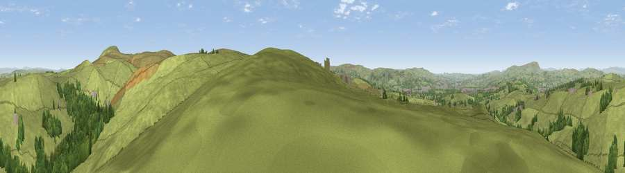

Viewpoint near Haggate
#12264 in England · top 18% of its area beats it · near Haggate · footpathWhere it is
The exact computed spot (SD 89875 34175). Click the marker for map links.
Public access: a public right of way passes within 49 m of this spot. Computed from Natural England's CRoW access layer and OpenStreetMap rights of way — not the legal definitive map. Always verify locally.
The view, rendered

A 360° render of this exact spot computed from the terrain model, tree cover and land cover — summer colours, afternoon light, calibrated against photographs of famous viewpoints. Real trees, hedges and buildings will differ in detail.
The panorama
Grey silhouette: terrain skyline in each direction (720 bearings, Earth curvature and refraction included). Dashed green: skyline with trees (+15 m) and buildings (+8 m) as obstacles. Blue strip: how far the ground is visible on each bearing.
Where the view opens
Wedge length = distance to the farthest visible ground on that bearing (vegetation-aware). Rings at 10, 25 and 50 km.
What fills the view
82% grassland · 16% woodland · 2% built-up
Angular shares of the visible panorama (visual magnitude), not map area. Landscape diversity 0.24 (0–1 Shannon).
Key numbers
More beautiful places nearby
The staircase of upgrades: each row has a higher view potential than everything closer. Driving times are estimates from straight-line distance, calibrated against real road routing — check an actual route before setting out.
| Place | Direction | Drive | Score |
|---|---|---|---|
| Viewpoint near Worsthorne | SE · 3 km | ~6 min | 60.9 |
| Lad Law (Boulsworth Hill) | ENE · 3 km | ~8 min | 71.5 |
| Great Hameldon | WSW · 12 km | ~22 min | 74.2 |
| Pendle Hill | NW · 12 km | ~22 min | 76.5 |
| Viewpoint near Edenfield | SSW · 17 km | ~30 min | 77.5 |
| Darwen Hill | WSW · 25 km | ~41 min | 80.7 |
| White Brow | SW · 32 km | ~50 min | 82.9 |
| Warton Crag | NW · 56 km | ~78 min | 83.2 |
53.80377, -2.15522 · source: screening · position refined by local search. Computed location — check access rights before visiting.